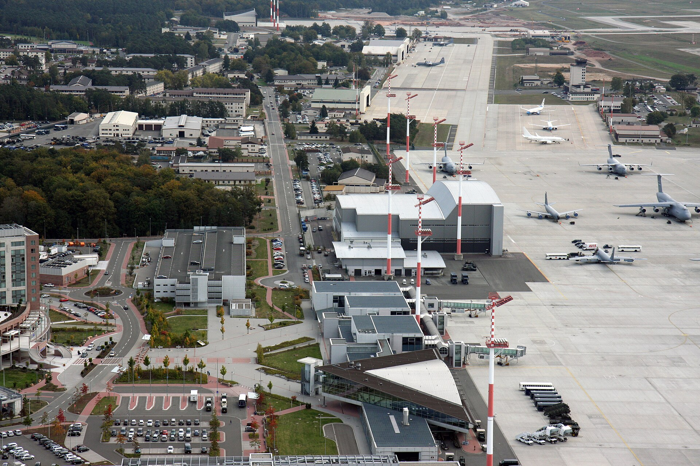
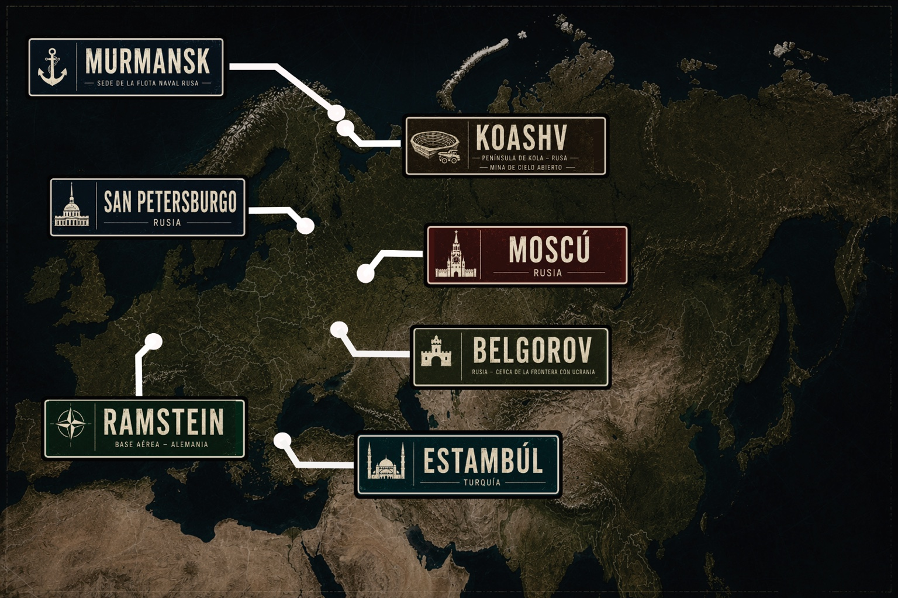

23 de julio de 2023
El minuto cero
Rusia sigue funcionando. Hay farolas encendidas, cafeteras calientes, ascensores detenidos entre plantas y pantallas que todavía anuncian vuelos. Lo que desaparece no es el país. Desaparece la gente.
Thriller geopolítico · Rusia · 23 de julio de 2023
A las 03:14, el país más grande del mundo queda encendido, intacto y vacío. No hay cadáveres. No hay evacuación. No hay respuesta humana.
La novela
El 23 de julio de 2023, a las 03:14 de la madrugada, toda la población humana de Rusia desaparece sin dejar rastro. Las ciudades quedan encendidas. Los trenes siguen avanzando hasta detenerse. Los teléfonos vibran sobre mesas vacías. El mundo, al principio, cree estar ante una maniobra de Putin, una trampa nuclear o una operación militar encubierta.
Pero las horas pasan y la ausencia se confirma. No queda nadie. Excepto algunos hombres aislados que no deberían seguir allí: Sergei Ivanovich, capitán del pesquero Vizhái, que regresa a Múrmansk buscando a su familia; un equipo de boinas verdes enviado a territorio ruso; y un científico que parece esperar el momento exacto para decir una frase imposible: “Estoy aquí para que captemos el mensaje”.
23 de julio de 2023
Rusia sigue funcionando. Hay farolas encendidas, cafeteras calientes, ascensores detenidos entre plantas y pantallas que todavía anuncian vuelos. Lo que desaparece no es el país. Desaparece la gente.
Guerra de Ucrania
El suceso llega en plena guerra, cuando la tensión entre Rusia, Ucrania y la OTAN ya ha cruzado todas las líneas de confianza. Cualquier silencio puede interpretarse como una amenaza. Cualquier movimiento, como el inicio de algo irreversible.
Reacción internacional
Washington, Bruselas, Kiev y Pekín intentan descifrar lo imposible con herramientas diseñadas para guerras humanas. Durante las primeras horas, nadie se atreve a decir en voz alta la única hipótesis que encaja: Rusia está vacía.
Biografías

Capitán del Vizhái. Regresa desde el Barents a un país intacto y vacío. Su viaje no empieza como una misión, sino como una búsqueda familiar.

Líder de los boinas verdes. Frío, metódico y consciente de que su misión puede no parecerse a ninguna guerra conocida.

Soldado joven. Entra en Rusia esperando una operación encubierta y encuentra un silencio que cambia su forma de entender el enemigo.

El hombre que no desapareció. Su presencia en una instalación militar convierte el misterio en mensaje.

Segundo de a bordo del Vizhái. Joven, impulsivo y lleno de una energía que el país vacío empieza a consumir.

Marinero veterano. Habla poco, pero su presencia sostiene a la tripulación cuando la realidad deja de obedecer.
Escenarios

Puerto ártico, sede de la Flota del Norte y punto de entrada al vacío.

El centro político desaparecido. La capital que el mundo espera que responda.

La Rusia imperial y cultural convertida en una ciudad de canales vacíos.

Nodo militar occidental. Desde allí, la crisis rusa se convierte en operación.

Frontera, guerra y sospecha. Un punto donde el silencio ruso se toca con Ucrania.

Mina de cielo abierto en la península de Kola. Una cicatriz industrial en el norte.

El tránsito entre mundos. La ciudad donde una ruta civil se convierte en tragedia.
Dossier geográfico

Vídeo
Pega aquí tu iframe de YouTube o sustituye este bloque por un vídeo.